Round Kid Coffee House
A full identity built around one hand-drawn character — five original illustrations of a round, delighted kid, carried from a single logo mark all the way to the cup, the bag and the shop window.
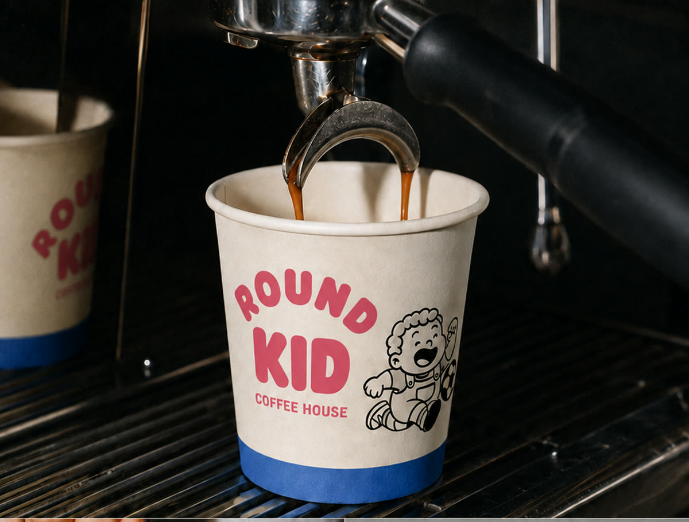
Cream, Navy & Pink
One character, three colorways — a different scene drawn on every cup.
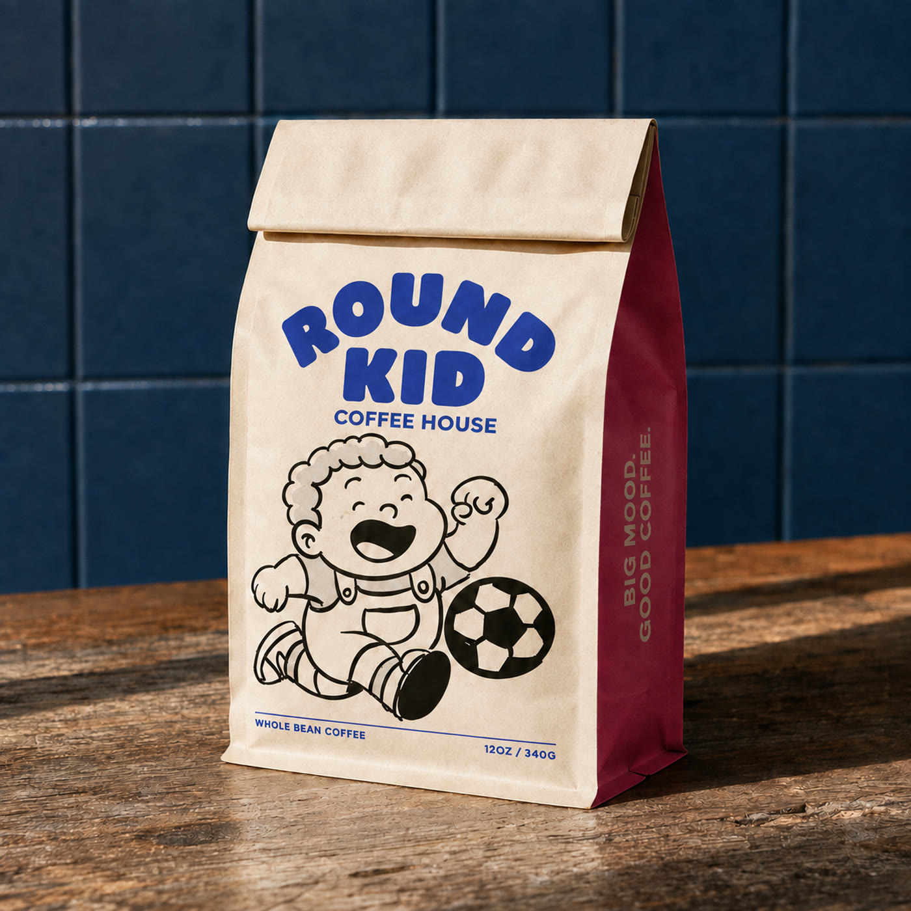
The Drum Kid
The mascot mid-drum-solo, printed right where the milk hits the cream.
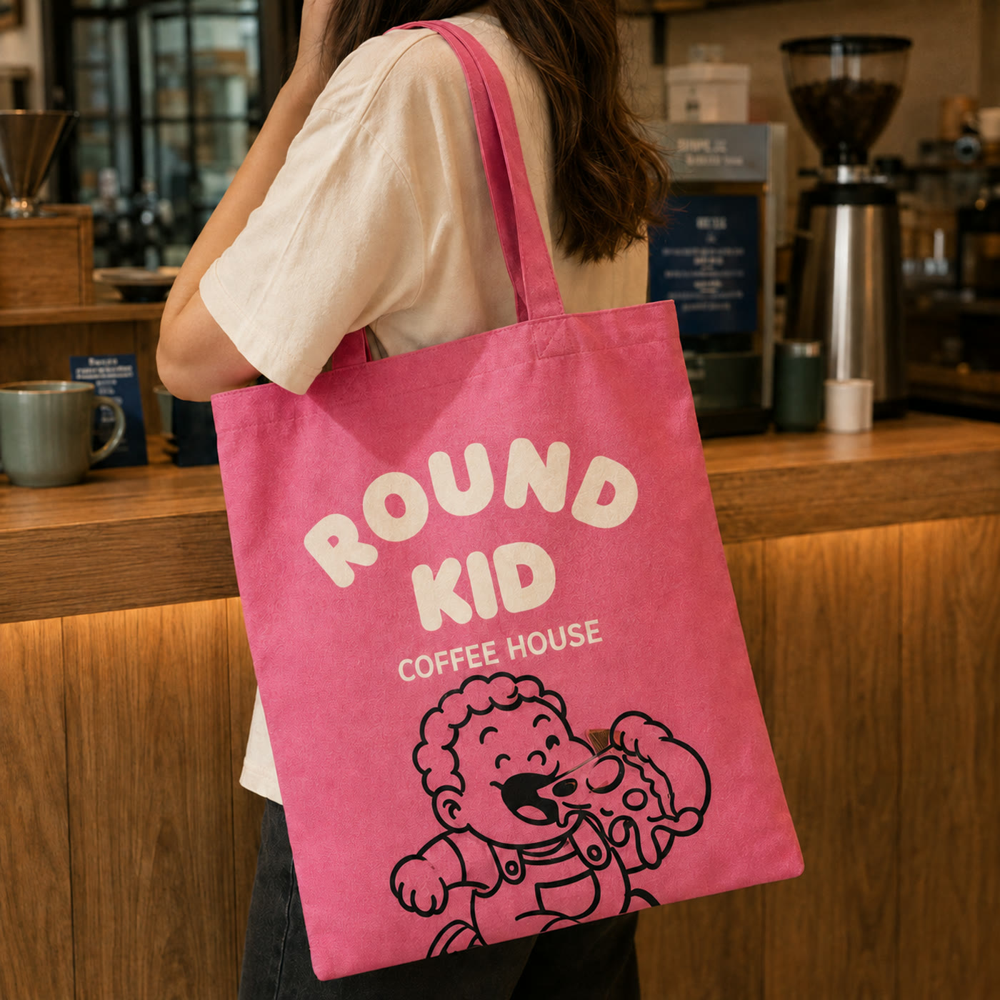
Whole Bean, 12oz
Kraft and burgundy, with the football kid running across the front.
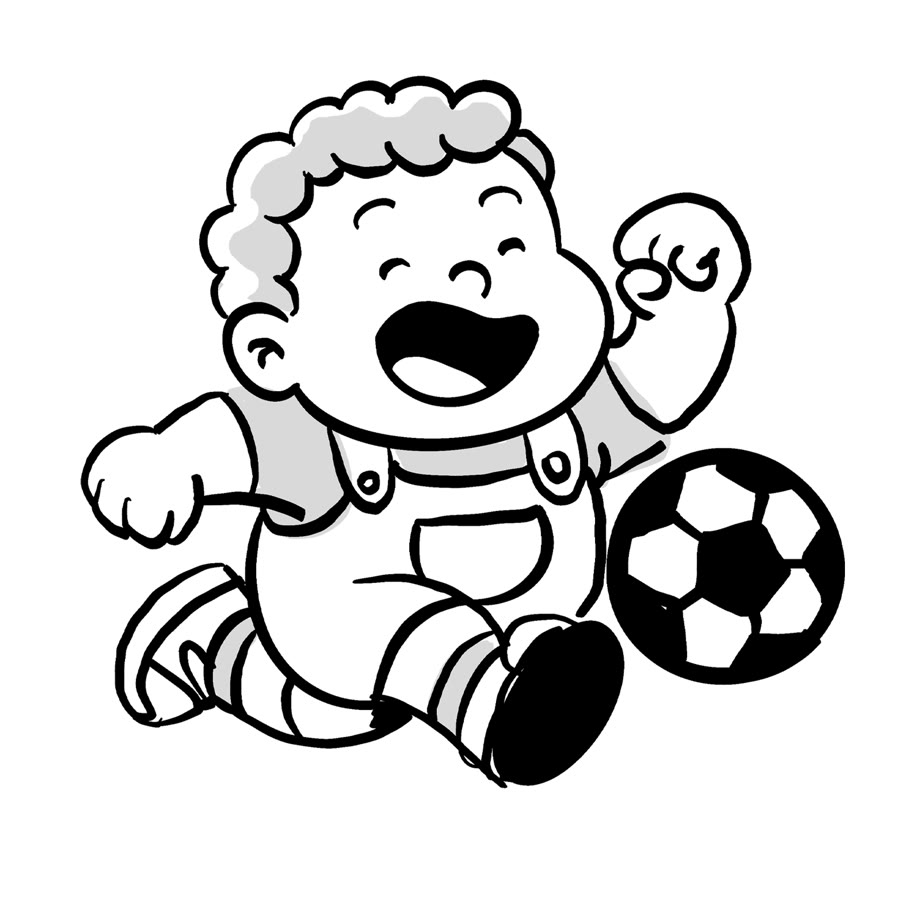
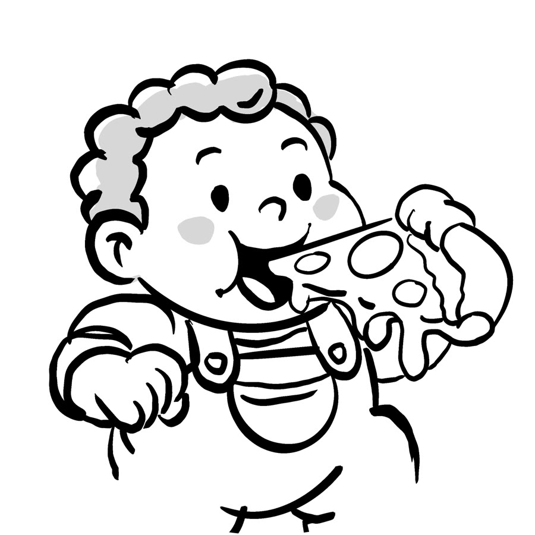
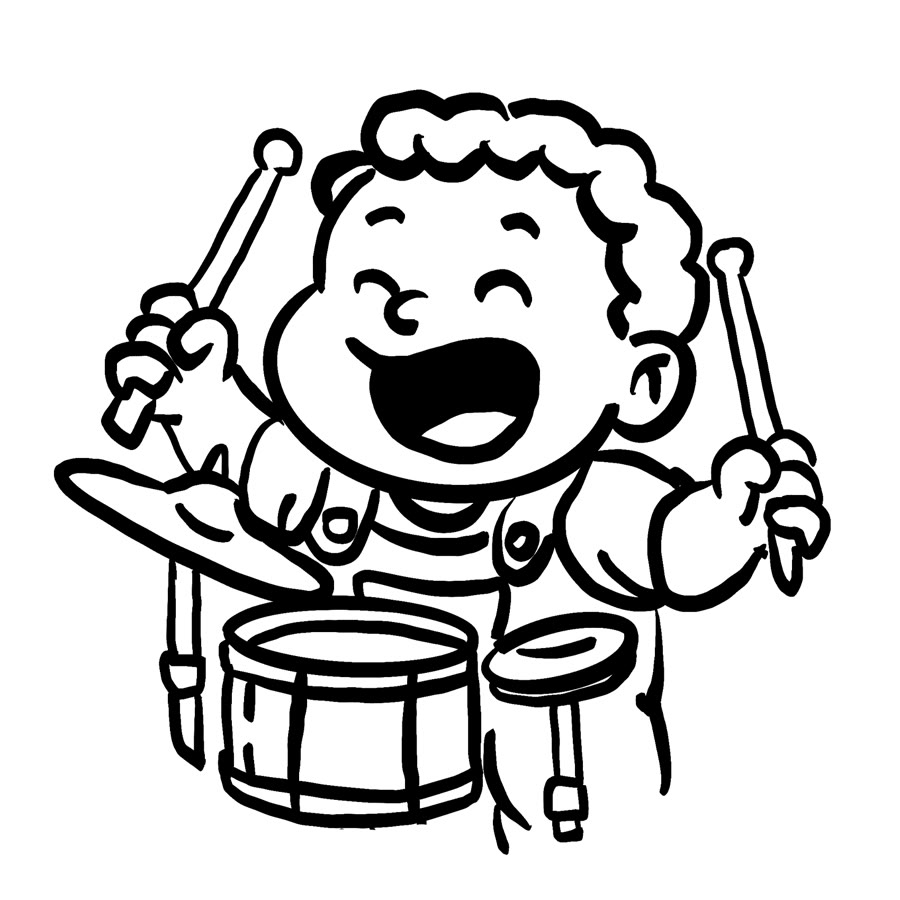
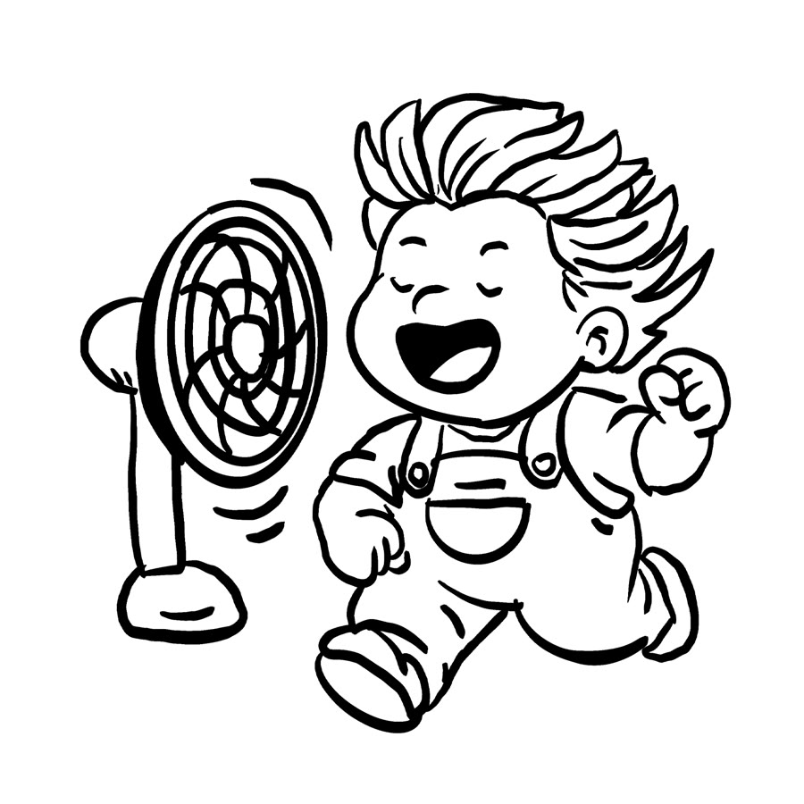
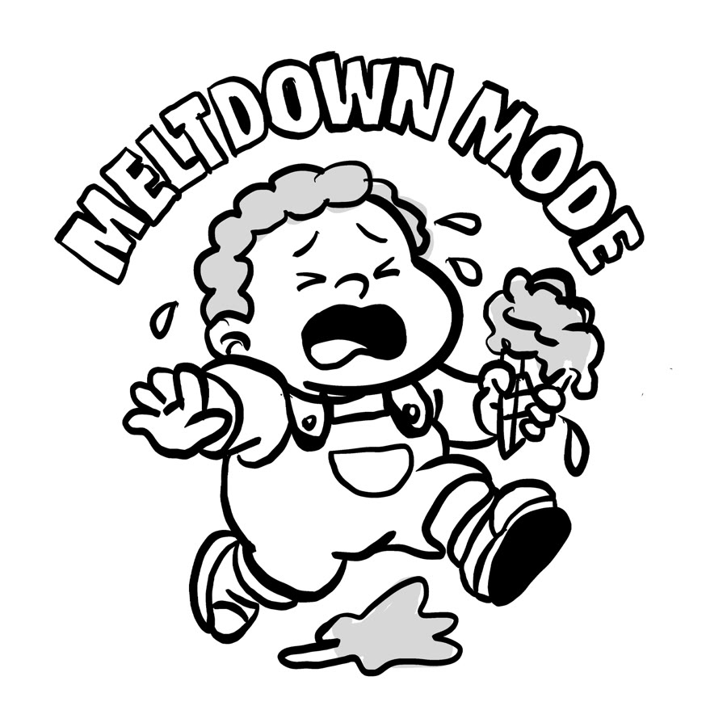
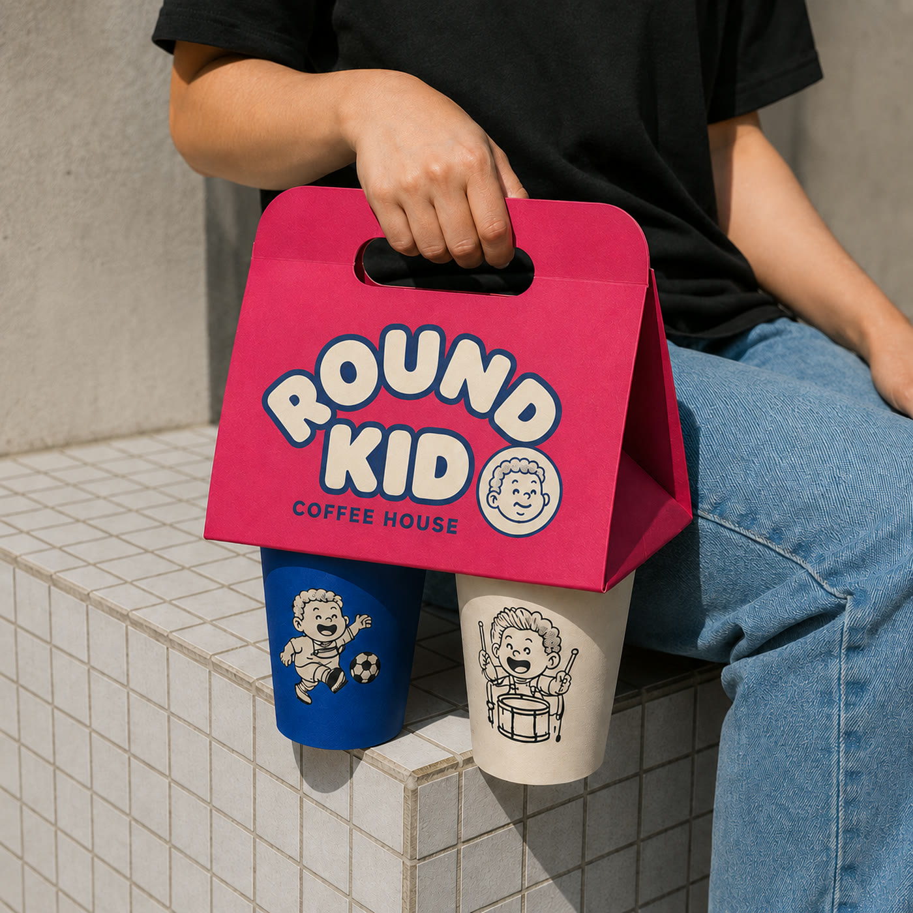
Big mood, good coffee
The same line art that lives on the cup, blown up big on a canvas tote — one of a handful of take-home pieces built to carry the brand past the counter.
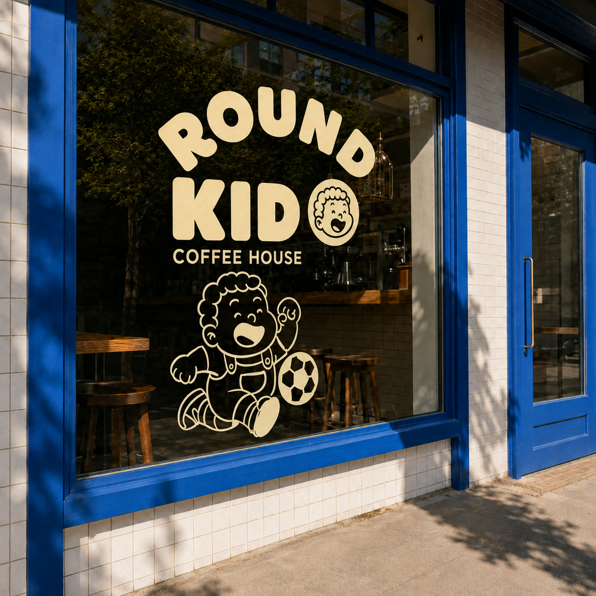
A window you can spot from the street
The wordmark, the roundel and the running kid, painted straight onto the glass — legible at storefront scale without losing any of the hand-drawn warmth.
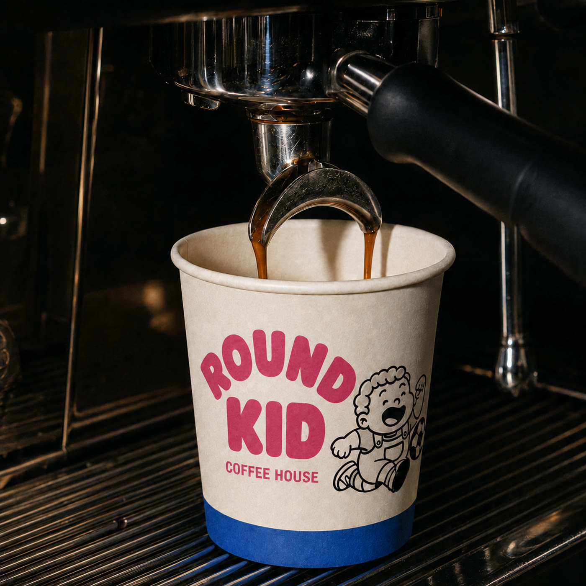